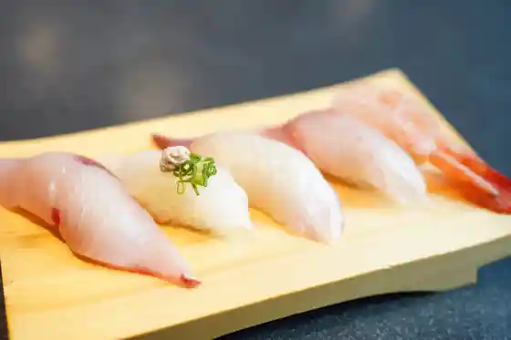
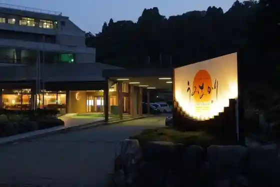
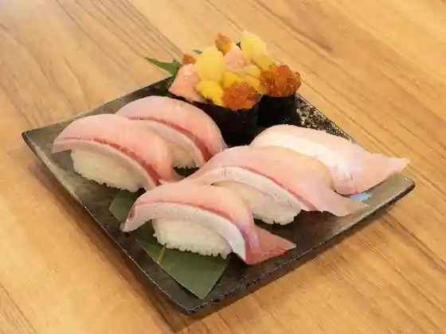
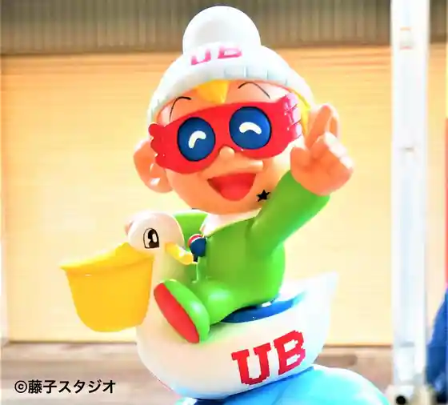

Himi Fishing Port Jogai Market (Himi Banya Machi) / Himi Onsen Sato (Soyu)
Himi, Toyama · 0766-72-3400 · Official / source link

Himi Onsen Sato Kutsurogi no Yado Umiakari
Himi, Toyama · 0766-74-2211 · Official / source link

Kitokito Sushi Himi Main Shop
Himi, Toyama · 0766-91-5114 · Official / source link

Manga Rodo
Himi, Toyama · 0766-74-8106 · Official / source link

Sushi no Ya
Himi, Toyama · 0766-91-1033 · Official / source link
Toyamaken Saibai Gyogyo Center
Himi, Toyama · 0766-79-1521 · Official / source link
Noto Han Shima Kokutei Park Himi Onsen Sato
Himi, Toyama · 0766-74-5250 · Official / source link
Himi Shiokaze Gyararii (Fujikofujio A Atokorekushon)
Himi, Toyama · 0766-72-4800 · Official / source link
Kyu Dono Hama Onsen
Himi, Toyama · 0766-79-1324 · Official / source link
Himi Gyogyo Bunka Koryu Center
Himi, Toyama · 0766-74-8018 · Official / source link
Himi Fishing Port no Asa Seri
Himi, Toyama · 0766-74-0170 · Official / source link
Himi Kaihin Botanical Garden Shiisaido Park
Himi, Toyama · 0766-91-0100 · Official / source link
Minshuku Aomasa
Himi, Toyama · 0766-91-5157 · Official / source link
Matsuba Sushi
Himi, Toyama · 0766-72-0266 · Official / source link
Dai Sakai Dokutsu Jukyoato
Himi, Toyama · 0766-74-8231 · Official / source link
Ao Castle Ruins
Himi, Toyama · 0766-74-8106 · Official / source link
Himi Eiwa Onsen Motoyu Kano
Himi, Toyama · 0766-72-2503 · Official / source link
Jojitsu Tera no Icho
Himi, Toyama · 0766-74-8106 · Official / source link
Ninja Hattori Kun Karakuri Tokei
Himi, Toyama · 0766-74-8106 · Official / source link
Sushi Ya no Shiro Hikari
Himi, Toyama · 0766-72-6167 · Official / source link
Kiyo Mizu
Himi, Toyama · 0766-72-2511 · Official / source link
Foresutofuroraru Himi Aiyama Garden
Himi, Toyama · 0766-72-4187 · Official / source link
Asahiyama Park
Himi, Toyama · 0766-74-8106 · Official / source link
Nagasaka no Tanada
Himi, Toyama · 0766-74-8086 · Official / source link
to Shima
Himi, Toyama · 0766-74-8106 · Official / source link
Himi Oki Kurujingu
Himi, Toyama · 0766-74-5250 · Official / source link
Isobe Shrine
Himi, Toyama · 0766-91-3165 · Official / source link
Shimao Beach
Himi, Toyama · 0766-74-5250 · Official / source link
Kan Takashi
Himi, Toyama · 0766-72-0394 · Official / source link
Takazawa Shuzo Ba
Himi, Toyama · 0766-72-0006 · Official / source link
Shimao Campground
Himi, Toyama · 0766-91-0074 · Official / source link
Himi no Ryori Yado Shiroyama
Himi, Toyama · 0766-72-1431 · Official / source link
Matsuda Ko Campground
Himi, Toyama · 0766-91-1835 · Official / source link
Mitsuhisa Tera no Chatei
Himi, Toyama · 0766-91-1690 · Official / source link
Kappo Shu Gatsu
Himi, Toyama · 0766-74-5941 · Official / source link
Sho Sakai Coast CCZ
Himi, Toyama · 0766-74-8106 · Official / source link
Kawa Ki
Himi, Toyama · 0766-74-5555 · Official / source link
Seizu Farm
Himi, Toyama · 0766-72-8288 · Official / source link
Tachibana Sushi
Himi, Toyama · 0766-74-4688 · Official / source link
Himi Ritsu Museum
Himi, Toyama · 0766-74-8231 · Official / source link
WHARF&CO. HIMI GLAMPING RESORT
Himi, Toyama · 0766-75-2629 · Official / source link
Umi Koshi Ni Nozomu Tateyama Renpo
Himi, Toyama · 0766-74-5250 · Official / source link
Hito Kamishiro Onsen
Himi, Toyama · 0766-91-1210 · Official / source link
Himi Rabo Aquarium
Himi, Toyama · 0766-91-2249 · Official / source link
Yanagida Nuno Oyama Burial Mound
Himi, Toyama · 0766-74-8106 · Official / source link
Juni Town Kata Suigo Park
Himi, Toyama · 0766-74-8106 · Official / source link
BREWMIN'
Himi, Toyama · 0766-54-6596 · Official / source link
Himi Teichiami Ryo Kengaku
Himi, Toyama · 0766-74-5250 · Official / source link
Mori Tera Castle Ruins
Himi, Toyama · 0766-74-8215 · Official / source link
Chojugataki
Himi, Toyama · 0766-74-8106 · Official / source link
Kaizu Ya
Himi, Toyama · 0766-91-3030 · Official / source link
Michi Jinja Haiden
Himi, Toyama · 0766-74-8106 · Official / source link
Juni Town Kata Onibasu Hassei Chi
Himi, Toyama · 0766-74-8106 · Official / source link
Himi Ushi Suteki & Wain Resutoran Toroika
Himi, Toyama · 0766-91-1378 · Official / source link
Himi no Asahi
Himi, Toyama · 0766-74-8106 · Official / source link
Ro Tani no Dai Tsubaki
Himi, Toyama · 0766-74-8106 · Official / source link
Shitateyasan Rapojie
Himi, Toyama · 0766-72-0100 · Official / source link
Shokusai Izakaya Nada Ya
Himi, Toyama · 0766-72-0424 · Official / source link
Kaki Ta Suisan
Himi, Toyama · 0766-74-0025 · Official / source link
Koma Tsunagi Sakura
Himi, Toyama · 0766-74-8106 · Official / source link
Shimao Jibiki Ki Ami Experience
Himi, Toyama · 0766-91-0074 · Official / source link
Fuse no Maruyama
Himi, Toyama · 0766-74-8106 · Official / source link
Café Kaze Raku Sato
Himi, Toyama · 0766-76-2032 · Official / source link
Wayo Kashi Tsukasa Saka Kokorozashi Ri
Himi, Toyama · 0766-72-1074 · Official / source link
Fujinami Shrine
Himi, Toyama · 0766-74-8106 · Official / source link
Matsuki Kashi Ho
Himi, Toyama · 0766-72-0983 · Official / source link
Himi Yakusho
Himi, Toyama · 0766-74-8100 · Official / source link